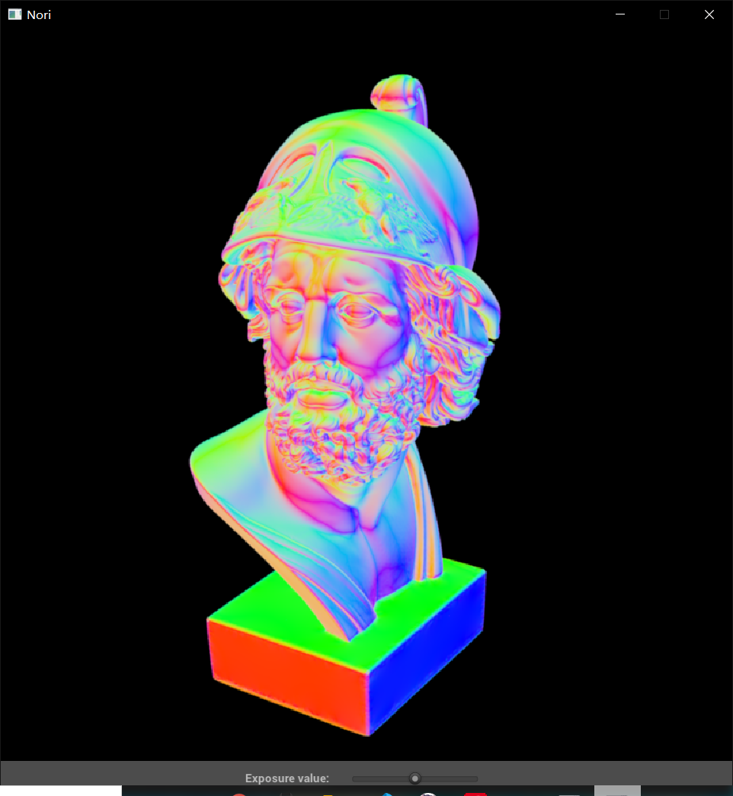

Assignment 2
作业2需要我们实现一个光线追踪加速结构，nori选择的是八叉树(Octree)

将空间划分为八个象限，也就是八个小立方体。划分前空间是根节点，与划分后的八个节点相连
这八个立方体是轴对齐包围盒(AABB)
然后递归分割下去。
分割不是无限分割下去，会设置一定的终止条件，比如节点中包含物体数量超过n，或者节点深处超过m
八叉树可以用于光线追踪加速的重要特性是，如果一个图元与某个节点包围盒不相交，那么这个图元一定不和该节点下任何图元相交。
那么在相交测试时，我们可以从八叉树根节点开始，如果图元与该节点相交，就继续遍历该节点的子节点，如果不相交就放弃该节点以及它的子节点。最后遍历到叶节点时，与叶节点中的图元进行精确求交测试

因为八叉树是将空间均匀分割，那一定会出现一个问题：某个图元与节点边界相交
图中右上角那齿轮，跨越了两个节点。有两个解决方法：
- 所有与物体相交的叶节点都引用该物体。例子中，有两个叶节点都引用七角星物体。
- 令中间节点（非叶节点）也能放置物体。例子中，上一层的中间节点（就是右上的正方形）放置七角星物体。
第一种可能会浪费些空间，大体积的物体需要被大量小范围的叶节点引用。第二种如果物体位置很巧，在整个包围盒中心，跨越八个节点，就算它体积很小，也只能放在根节点。
Step 1
- 下载一波他们提供的场景文件。
拿win10自带的3d查看看下信息

好家伙，54w个面…
- 看下和求交相关的API
include/nori/accel.cpp和include/nori/accel.h文件存放加速结构算法。- 函数
Accel::rayIntersect返回是否有交点
- 结构体
Intersection结构体存放射线交点的结果信息
Mesh::getBoundingBox有两个重载，没参的返回包围整个mesh的包围盒。带参的返回mesh三角面的包围盒，参数是三角面数组下标Mesh::rayIntersect和某个三角面精确求交运算TBoundingBox这是个模板类，看起来是定义各种不同维度的包围盒BoundingBox3f其实是TBoundingBox<Point3f>，就是三维包围盒BoundingBox3f::overlaps检查该包围盒是否包含另一个包围盒
试了下直接加载模型，渲染了5分钟啥都没出来，看来一定要加速结构了
Step 2
我准备让八叉树叶节点保存与它相交的所有物体，其余节点不保存数据
首先我们要把八叉树建出来
不想用指针，但这是一棵树，一定要有索引子节点的能力…那就决定是你了，数组模拟链表！
定义八叉树树节点
1
2
3
4
5
| struct OctNode {
size_t child = 0;
BoundingBox3f bbox;
std::vector<uint32_t> indice;
};
|
为什么子节点下标只存一个？
因为子节点一次性全部分配出来，它们在数组中是连续的，那么只需要存第一个子节点，那剩下7个都能索引到
在Accel类中
1
2
3
4
5
6
7
8
9
| class Accel {
private:
std::vector<OctNode> m_tree;
size_t m_maxDepth = 0;
size_t m_leaf = 0;
size_t m_node = 0;
};
|
在build函数中
1
2
3
4
5
6
7
8
9
10
11
12
13
14
15
16
17
18
| void Accel::build() {
if (m_mesh == nullptr) {
return;
}
using namespace std::chrono;
auto start = high_resolution_clock::now();
m_tree.clear();
m_tree.emplace_back(OctNode());
m_tree.emplace_back(OctNode{0, m_mesh->getBoundingBox()});
for (uint32_t idx = 0; idx < m_mesh->getTriangleCount(); ++idx) {
add(idx);
}
auto end = high_resolution_clock::now();
std::cout << "OctTree build time:" << duration_cast<milliseconds>(end - start).count() << "ms\n";
std::cout << "max depth:" << m_maxDepth << "\n";
std::cout << "node count:" << m_node + 1 << "\n";
std::cout << "leaf count:" << m_leaf + 1 << "\n";
}
|
关键是add函数如何实现。插入步骤大概是：
- 将三角形与当前节点的包围盒进行覆盖测试，如果能被包住，进入第2步，否则跳出
- 如果当前节点是叶节点，就直接插入，检查节点是否满足分裂条件，然后跳出
- 当前节点不是叶节点，就往8个子节点寻找可以插入的节点，回到第1步
具体实现：
1
2
3
4
5
6
7
8
9
10
11
12
13
14
15
16
17
18
19
20
21
22
23
24
25
26
27
28
29
30
31
32
33
34
35
36
37
38
39
40
41
42
43
44
45
46
47
48
49
50
51
52
| constexpr uint32_t MaxData = 16;
constexpr uint32_t MaxDepth = 8;
void Accel::add(uint32_t idx) {
auto triBox = m_mesh->getBoundingBox(idx);
std::queue<std::pair<size_t, int>> q;
q.push(std::make_pair(1, 1));
while (!q.empty()) {
auto [ptr, dep] = q.front();
q.pop();
if (!m_tree[ptr].bbox.overlaps(triBox)) {
continue;
}
m_maxDepth = std::max(m_maxDepth, (size_t)dep);
if (m_tree[ptr].child == 0) {
m_tree[ptr].indice.emplace_back(idx);
if (m_tree[ptr].indice.size() < MaxData) {
continue;
}
if (dep >= MaxDepth) {
continue;
}
m_node += 8;
m_leaf += 7;
m_tree[ptr].child = m_tree.size();
for (int i = 0; i < 8; i++) {
Vector3f minPoint;
Vector3f maxPoint;
Vector3f center = m_tree[ptr].bbox.getCenter();
Vector3f corner = m_tree[ptr].bbox.getCorner(i);
for (size_t j = 0; j < 3; j++) {
minPoint[j] = std::min(center[j], corner[j]);
maxPoint[j] = std::max(center[j], corner[j]);
}
BoundingBox3f childBox(minPoint, maxPoint);
m_tree.emplace_back(OctNode{0, childBox});
}
for (uint32_t meshIdx : m_tree[ptr].indice) {
for (size_t chPtr = m_tree[ptr].child; chPtr < m_tree[ptr].child + 8; chPtr++) {
if (m_tree.at(chPtr).bbox.overlaps(m_mesh->getBoundingBox(meshIdx))) {
m_tree.at(chPtr).indice.emplace_back(meshIdx);
}
}
}
m_tree[ptr].indice.clear();
m_tree[ptr].indice.shrink_to_fit();
} else {
for (size_t i = 0; i < 8; i++) {
q.push(std::make_pair(m_tree[ptr].child + i, dep + 1));
}
}
}
}
|
实现时遇到个超级大坑，本来在第9行到第10行之间，有一句引用当前节点OctNode& n = m_tree[ptr];
结果在节点分裂时，会出现父节点引用子节点的下标是错的，而且子节点包围盒内数据全是inf的情况
debug半天才想起，vector在扩容时会重新开辟空间，把老数据复制过去，再销毁老地址，引用老地址会造成悬空引用
后来把所有变量n都改成了m_tree[ptr]就修复了。太tm坑了
（没严格按照nori给出的伪代码来实现）
Step 3
树建好了，接下来是求交
根据八叉树特性，就可以写出：
1
2
3
4
5
6
7
8
9
10
11
12
13
14
15
16
17
18
19
20
21
22
23
24
25
26
27
28
29
30
31
32
33
34
35
36
37
38
39
40
| bool Accel::traverse(size_t n, bool shadow, Ray3f& ray, Intersection& its, uint32_t& hitIdx) const {
const OctNode& node = m_tree[n];
if (!node.bbox.rayIntersect(ray)) {
return false;
}
bool isHit = false;
if (node.child == 0) {
for (uint32_t idx : node.indice) {
float u, v, t;
if (m_mesh->rayIntersect(idx, ray, u, v, t) && t < ray.maxt) {
if (shadow) {
return true;
}
ray.maxt = t;
its.t = t;
its.uv = Point2f(u, v);
its.mesh = m_mesh;
hitIdx = idx;
isHit = true;
}
}
} else {
std::pair<size_t, float> children[8] = {};
for (size_t i = 0; i < 8; i++) {
size_t childPtr = node.child + i;
children[i] = std::make_pair(childPtr, m_tree[childPtr].bbox.distanceTo(ray.o));
}
std::sort(children, children + 8, [](const auto& l, const auto& r) { return l.second < r.second; });
for (const auto& ch : children) {
isHit |= traverse(ch.first, shadow, ray, its, hitIdx);
if (shadow && isHit) {
return true;
}
}
}
return isHit;
}
|
Step 4
来试试船新的八叉树效果如何
先来个bunny兔的


4s->167ms，太惊人了！
再来个ajax头像的


原本768x768x32x540000的计算量，只要6.4秒！